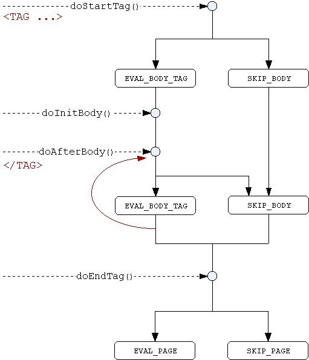

jsp & tag library. Eine Einführung toc prev next
5.1 Einfache tag handler Klassepackage mttags;
import javax.servlet.jsp.*;
import javax.servlet.jsp.tagext.*;
/**
* A simple Tag that displays a message.
*/
public class LookUpTag extends TagSupport {
// Constructor
public LookUpTag()
{
super();
}
// Attribute
private String jndiName="";
/**
* Method used by the JSP container to set the parameter Name.
*/
public void setJndiName(String name)
{
this.jndiName=name;
}
/**
* Method Called at end of Tag
* @return either EVAL_PAGE or SKIP_PAGE
*/
public int doEndTag() throws javax.servlet.jsp.JspTagException
{
try
{
pageContext.getOut().write("LookUp for"+jndiName);
}
catch(java.io.IOException e)
{
throw new JspTagException("IO Error: " + e.getMessage());
}
return EVAL_PAGE;
}
}
Es muss ein Konstruktor und für das Attribut ein Feld und entsprechende
set-Methode existieren. <mt:LookUp jndiName="Bach"/> und die Ausgabe LookUp for Bach Neben doEndTag gibt zahlreiche
andere Methoden, die zu unterschiedlichen Zeitpunkten vom JSP container
ausgeführt werden. 5.2 do-MethodenWann werden die do-Methoden aufgerufen und welchen Einfluß haben ihre Rückgabewerte. 
|
jsp & tag library. Eine Einführung toc prev next [ back to a P a g e ]